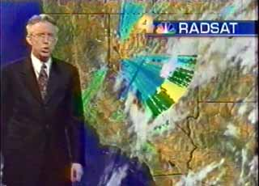
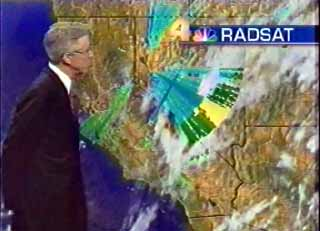
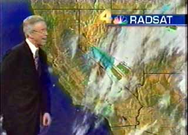
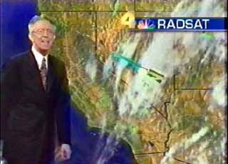

"Big Flasher" from Western Nevada -
4th April, 2001
Seems to originate from Fallon
Naval Air Station
|
 |
 |
|
 |
 |
KNBC Weatherman Fritz Coleman during 6pm News in Los
Angeles
There were two "flashes" during his presentation, the second less
extensive.
The first and more pronounced flash was probably caused when the effect was
switched in, and the second weaker flash was probably caused when it was
switched out.